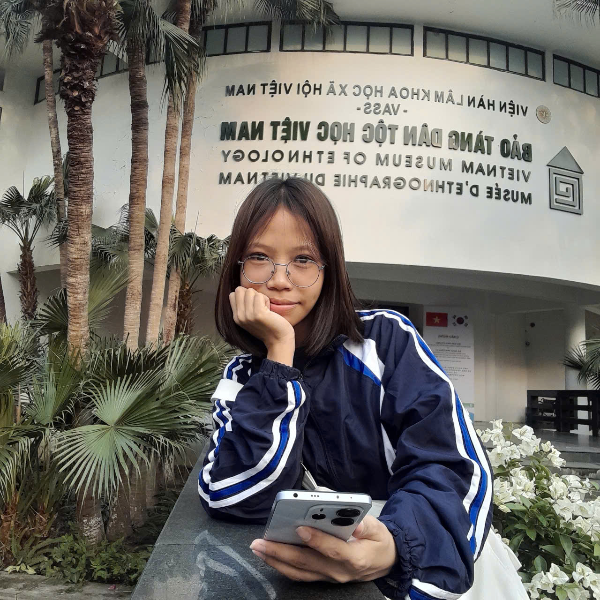

Sinh viên ngành Hệ thống thông tin
Mình có niềm đam mê lớn với việc tìm hiểu cách dữ liệu vận hành và cách công nghệ giải quyết các bài toán nghiệp vụ thực tế. Thay vì chỉ viết code một cách máy móc, mình thích nhìn hệ thống dưới góc độ tổng thể: từ phân tích yêu cầu, thiết kế luồng dữ liệu cho đến quản trị dự án. Chào mừng thầy cô và các bạn đến với góc nhỏ lưu giữ hành trình học tập của mình!
0978722307

| Trường: | Đại học Công nghệ (VNU-UET). |
| Chuyên ngành: | Hệ thống thông tin (Information Systems). |
| Môn học nền tảng: | Phân tích & Thiết kế HTTT, Quản trị Cơ sở dữ liệu, Khai phá dữ liệu, Quản lý dự án phần mềm. |
| Mục tiêu: | Trở thành Chuyên viên Phân tích nghiệp vụ (BA) / Kỹ sư Dữ liệu vững chuyên môn và có đạo đức nghề nghiệp. |
| Phân tích hệ thống: | Thiết kế biểu đồ UML, Mô hình hóa quy trình nghiệp vụ (BPMN), Đặc tả yêu cầu. |
| Quản trị Dữ liệu: | Thiết kế ERD, SQL Server, MySQL, Data Mining cơ bản. |
| Công cụ làm việc: | Git, Figma (Wireframe), Trello/Jira (Agile), Google Workspace. |
| Khai thác AI: | Prompt Engineering, Data Visualization bằng GenAI. |
Minh chứng kết quả thực hành chi tiết theo cấu trúc Chuẩn đánh giá năng lực số:
Bước vào môn học Nhập môn Công nghệ số và Ứng dụng Trí tuệ nhân tạo, ban đầu mình chỉ nhìn nhận máy tính hay AI như những công cụ hỗ trợ giải trí hoặc giải bài tập đơn thuần. Tuy nhiên, qua từng tuần học và 6 bài thực hành thực tế, tư duy của mình đã hoàn toàn thay đổi. Với tư cách là một sinh viên chuyên ngành Hệ thống thông tin, khóa học đã giúp mình nâng cao góc nhìn lên tầm hệ thống.
Mình bắt đầu hiểu cách dữ liệu được tổ chức một cách logic, cách áp dụng các thuật toán tìm kiếm học thuật nâng cao để chắt lọc chất xám, và đặc biệt là cách làm chủ các mô hình ngôn ngữ lớn (GenAI) thông qua tư duy Prompt Engineering thay vì phụ thuộc một cách mù quáng vào nó. Sự chuyển dịch từ "người dùng thụ động" sang "người khai thác chủ động, có tính toán" chính là giá trị lớn nhất mà mình đạt được.
Hành trình này không hoàn toàn trải đầy hoa hồng. Có những lúc mình gặp khó khăn trong việc thiết lập câu lệnh tối ưu ở Bài thực hành số 3, hay việc kết nối, đồng bộ công việc real-time cùng các thành viên trong nhóm ở Bài thực hành số 4. Việc dung hòa giữa cái tôi sáng tạo cá nhân và khả năng phản hồi tự động của máy móc đôi khi tạo ra những kết quả chưa thực sự ưng ý.
Thế nhưng, chính những lần thử nghiệm sai và làm lại, cùng sự đóng góp ý kiến từ bạn bè đã giúp mình rèn luyện được tính kiên trì. Việc vượt qua các rào cản kỹ thuật giúp mình nhận ra rằng: Công nghệ vô cùng mạnh mẽ, nhưng sự nhạy bén và tư duy quản trị của con người mới là yếu tố quyết định sự thành bại của một hệ thống thông tin.
Một dấu ấn cực kỳ sâu sắc mà môn học để lại cho mình nằm ở Bài thực hành số 6 - Đạo đức và Liêm chính học thuật. Giữa bối cảnh AI đang bùng nổ mạnh mẽ, ranh giới giữa việc ứng dụng AI để gia tăng hiệu suất và việc lạm dụng AI để đạo văn trở nên vô cùng mong manh. Khóa học đã trang bị cho mình bộ quy tắc ứng xử chuẩn mực để tự tin khẳng định: Mỗi sản phẩm mình làm ra là sự hòa quyện chân chính giữa công nghệ hiện đại và chất xám của bản thân.
Mình xin gửi lời cảm ơn chân thành nhất đến Thầy/Cô bộ môn đã tận tụy truyền đạt tri thức và xây dựng một lộ trình thực hành vô cùng bài bản. Những kiến thức nền tảng vững chắc này chắc chắn sẽ là bệ phóng lớn, hành trang không thể thiếu giúp mình tự tin tiến xa hơn trên con đường trở thành một Kỹ sư Dữ liệu hoặc một Chuyên viên Phân tích nghiệp vụ (BA) thực thụ trong tương lai.